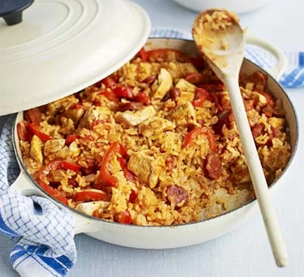

Chicken & Chorizo Jambalaya

Ingredients
- 1 tbsp Olive Oil
- 2 Chicken Breasts, chopped
- 1 Onion, diced
- 1 Red Pepper, thinly sliced
- 2 Garlic Cloves, crushed
- 75g Chorizo, sliced
- 1 tbsp Cajun Seasoning
- 250g Long Grain Rice
- 400g tin Plum Tomatoes
- 350ml Chicken Stock
Cooking Method
- Heat 1 tbsp of olive oil in a large frying pan with a lid and brown 2 chopped chicken breasts for 5-8 minutes until cooked through.
- Remove from heat and set aside. Tip in the 1 diced onion and cook for 3-4 minutes until soft.
- Add 1 thinly sliced Red Pepper, 2 crushed Garlic Cloves, 75g sliced Chorizo and 1 tbsp Cajun Seasoning, and cook for 5 minutes more.
- Stir the Chicken back in with 250g long grain rice, add the 400g can of Tomatoes and 350ml Chicken Stock. Cover and simmer for 20-25 minutes until the rice is tender.
Click here to return to homepage.